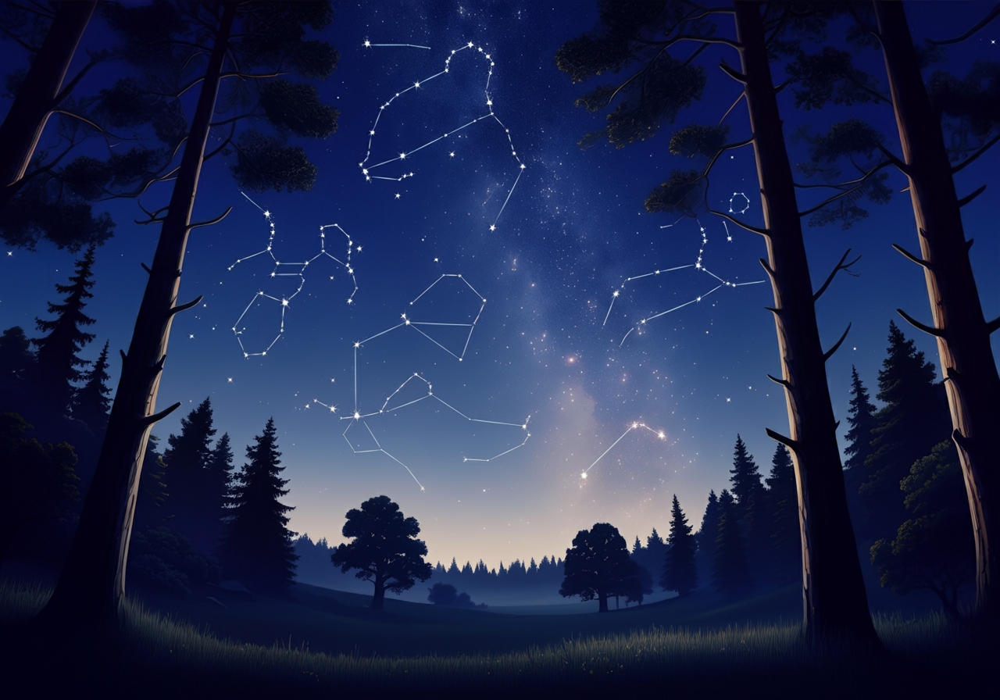
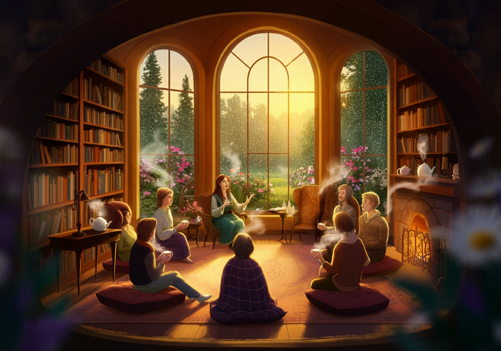
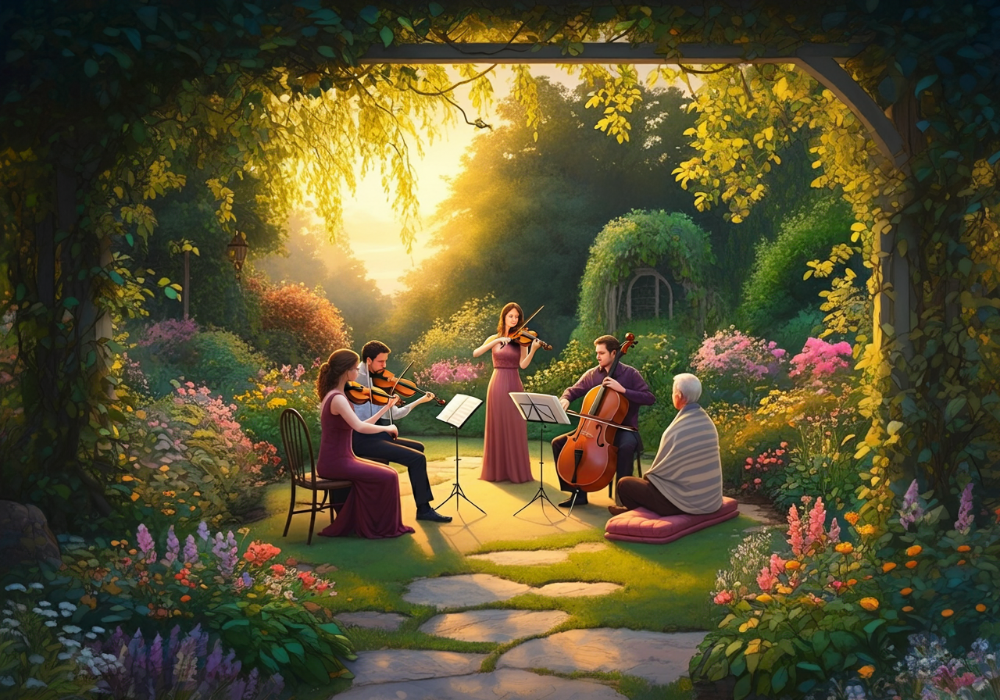

Weekend Events
At Briar Blossom, we believe in the magic of shared experiences. Our curated events are designed to inspire creativity, connection, and relaxation. From cozy evenings under the stars with our local astronomers to afternoon crafting workshops where you can create something beautiful with your hands, there’s always something to delight the senses. Many of these gatherings are hosted by talented members of the Fablewood City community, bringing a sense of local charm and artistry to each experience. All events are free for our guests, with select activities also open to the public for a deeper connection with the surrounding area. Whether you're here for a weekend getaway or a local resident, come and enjoy the magic of Briar Blossom’s events.
Saturday
Foraging & Crafting Workshop
Afternoon
Join naturalist Karme Hildingr for a guided exploration of the nearby trails and garden areas. Collect wildflowers, herbs, or pinecones to create unique keepsakes such as herbal sachets or pressed flower bookmarks. Supplies and guidance are provided, ensuring guests leave with both memories and handmade treasures.
Night Sky Navigation
Nighttime
Just a short walk from the B&B, stargazing enthusiast and astronomer Althea Evander leads an unforgettable evening under the stars. Learn to identify constellations and hear the myths behind them while wrapped in cozy blankets. Hot cocoa and marshmallows are served, creating the perfect ending to your day.
Sunday
Sunrise Tea & Tales in the Library
Morning
Start your day with a warm cup of chamomile-lavender tea as storyteller Kleio Magni shares captivating local legends and folk tales in the cozy library. The soft morning light filters through the tall windows, creating a tranquil and inspiring atmosphere to ease you into the day.
String Quartet in the Garden
Late Afternoon
Experience an enchanting late afternoon with a live performance by the Nysa Quartet, serenading guests beneath the golden glow of the setting sun. Sip on sparkling refreshments while the music blends seamlessly with the rustling leaves and chirping birds of the B&B’s lush garden.